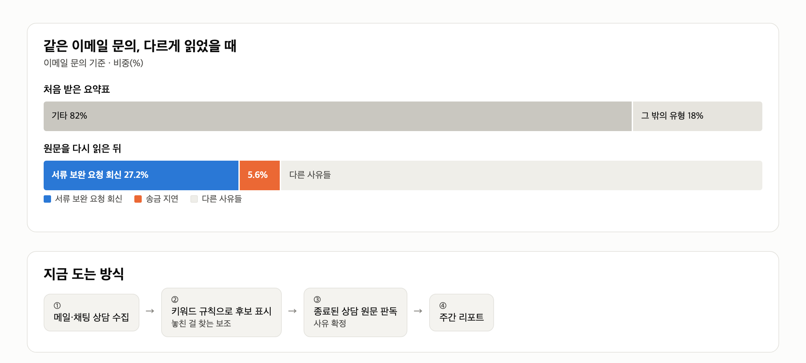

VoC
고객 인사이트 자동화
'기타'로 묶여 있던 고객 문의를 원문부터 다시 읽어, 요약표에는 보이지 않던 1순위 문의 사유를 찾았습니다.
82%처음 받은 요약표에서 '기타'로 묶여 있던 이메일 문의 비중
27.2%원문을 다시 읽어 찾은 1순위 사유(서류 보완 요청 회신)의 비중
약 5배그 1순위 사유 ÷ 송금 지연 문의

'기타' 82%에서 시작했습니다
메일과 채팅 상담 문의를 정리해 달라는 요청을 받았습니다. 처음 받은 요약표에서는 이메일 문의의 82%가 '기타'로 묶여 있었고, 이 표로는 무엇을 먼저 고칠지 말할 수 없었습니다. 원문으로 돌아가기로 했습니다.
자동 분류로 될까?
- 키워드 규칙을 만들어 상담 채널 자체 태그와 얼마나 맞는지 쟀습니다. 규칙을 두 번 손본 뒤에도 일치율은 약 51%에 머물렀습니다.
- 태그가 달린 상담 표본에 작은 로컬 AI 모델 두 개를 돌려 봤습니다. 같은 태그 기준으로 약 56% 일치라, 리포트 근거로는 쓰지 않고 접어 두었습니다.
- 결국 종료된 상담을 원문으로 읽어 사유를 확정하고, 규칙은 놓친 걸 찾는 보조로 남겼습니다. 리포트 주기도 월 단위에서 주 단위로 줄였습니다.
원문을 읽자 1순위가 보였습니다
이메일 문의 기준으로 서류 보완 요청에 대한 회신이 27.2%로 가장 많았습니다. 송금 지연 문의의 약 5배였습니다. 앞의 일치율들은 채널 태그를 기준으로 잰 값이라 참고 지표로만 씁니다.
※ 사내 기밀 보호를 위해 수치는 비율·배수 같은 상대 표현만 썼습니다.